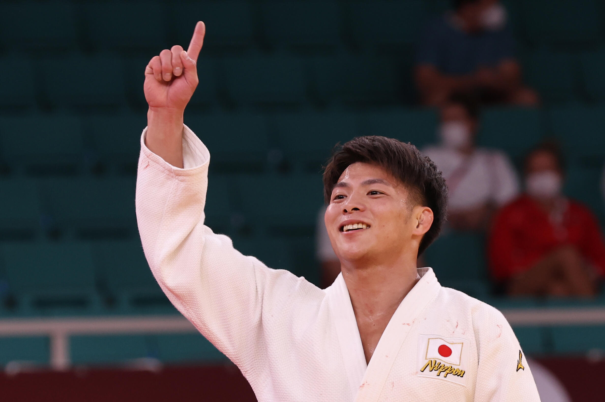

Hifumi Abe
Japanese Judo Champion
About Hifumi Abe
Hifumi Abe was born on August 9, 2000, in Kobe, Japan. He is a Japanese judoka who competes in the 66 kg weight class. Abe became an Olympic champion at the Tokyo 2020 Olympic Games. He is known for his powerful and technical judo style.
August 9, 2000 — Present
道
📅 Key Events
-
Born on August 9, 2000
Started judo at a young age and developed a passion for the sport.
-
Olympic Champion — Tokyo 2020
Won the Olympic gold medal in the men's 66 kg category.
-
World Champion — 2022
Won the World Judo Championships in the 66 kg category.
-
Multiple Grand Slam Titles
Won several Grand Slam tournaments during his international career.
-
Continued Success
Continues to compete at the highest level of international judo.
🏆 Main Achievements
- Olympic Gold Medal — Tokyo 2020, 66 kg
- World Champion — 2022, 66 kg
- Multiple Grand Slam Gold Medals
- Asian Champion
- Junior World Champion
"Judo is not just a sport, it is a way of life."
— Hifumi Abe